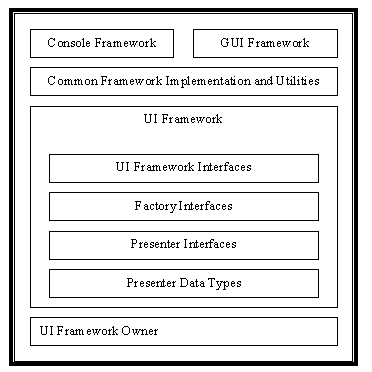

Last updated: [98/05/11 Claire]
A UI Framework is quite simply that portion of the application that is responsible for taking input from the user and propagating it to the appropriate subsystem while displaying output from all other subsystems to the user. A collection of interfaces is used to establish the contract with the application to adequately represent it to the user. How the framework implements the contract is determined by the nature of the framework.
The UI Framework was constructed to allow the application to attach a specific UI by checking startup parameters at runtime. The Presenter Framework was created to abstract away the presentation layer from the agency and the una. There are currently two such frameworks, the console framework which allows text only input and output and the GUI or perhaps more appropriately the AWT/AnyChannel Render framework. There is nothing in the current architecture that restricts the number or style of frameworks. The desire for two frameworks was to act as a check on the basic design assumption that the agency and una be presentation neutral. The preference for a console framework was motivated by a desire to have a lighter weight chat application and a hub framework that could run anywhere.

The UIFramework is started by the UIFrameworkOwner. The UIframeworkOwner was created as a wrapper class to separate out the application startup elements that were independent of any specific framework. More importantly, the application could be restarted with a different framework from the one it was last saved after a quake. The UIFramworkOwner is responsible for initializing the current UIFramework and loading in UI data resources.
The UIFramework has responsibility for providing visual presenters for the una and other part of the system. Factories are a common design pattern used for creating families of related objects without specifying their concrete classes. The factory pattern was used to build interfaces for classes that could be requested to return some object without needing to know the details of how the object is constructed. The bare bones framework acts a container for the various UI factories and some initialization and setup routines. The majority of the work is performed in the various factories. Each factory is constructed lazily. They are used by both the una and the framework to construct presenter objects, as they are needed.
The UI Factory was divided into four factories to separate out the various families of related and dependent Presenters. They were further subdivided based on the level of security needed. The Una Presenter Factory is used to create the representation of una for in-world display. The Unum UI Presenter Factory is used to create an Unum's menu and labels and any other menu or button elements. The UI Presenter Factory is used to create external windows that are not deemed sensitive. The Session UI Presenter Factory is used to create external and in-world elements that are deemed sensitive and/or should be created once per session.
Each framework has its version of the factories. Interfaces are used to guarantee that the factory will return an object usable by the requester. After receiving the request for a presenter, each factory returns an object with an interface of the correct presenter type. Frameworks also share data types used to construct and initialize presenter elements. The presenter a framework factory returns however is not guaranteed to work in all cases for all objects. The actual implementation of an object may include data or methods that are ignored. Where common elements could be found to exist across implementation an abstract parent class was used to capture the common behavior.
The notification manager was added as a means to allow the Unum to display notifications to the user in a presentation neutral manner. This is a fifth factory really. A notification can be anything from a set cursor, alert dialog, to a scene transition. It is an object that wraps the framework specific behavior for a specific notification type. You must request a notification object of the correct kind from the notification manager. It is always given a specific id that must be used to actually use it. This can be changed to allow objects across package and call boundaries to be able to reference it. It must however be unique or an exception will be thrown. Every notification object has start and stop methods that are called to start and stop the notification. A notification can be used multiple times. A specific framework is supposed to perform the appropriate action for that notification which may mean outputting message to the console or displaying a dialog or some other visual effect. The notification manager was added late in the development cycle and it should eliminate some of the UI Presenter Factory methods like alert and scene transition.
A framework is responsible through its various presenters for providing elements that allow a user to communicate with the Unum and visa versa. This requires synchronization between the user and the Unum. When a user expresses interest in an Unum, either by clicking or by using a command, the Unum is notified by it Unum UI Presenter to update its menu and label. The commands available is a function of where the Unum is located, what the avatar is holding and its own state. The call is a synchronous call. The Unum returns a state that is correct at the instant of the request. If the state changes, the Unum can either notify its Unum UI Presenter or wait for the next request to update. Once the commands and current name are known, they can be constructed to display when appropriate to the user. A user can send a command to the Unum through text, a button push or a menu selection. This command is checked against the current list of available commands and then forwarded to the UnumUIResponder assigned to that command.
A detailed discussion of the design and architecture of the Unum UI support can be found in an earlier document: UnumUI
The changes to the basic framework are minimal. The primary mechanism of binding a specific UI framework to a running program is largely working. The principle areas for change are
instanceof test on the object which is returned. Currently the Unum UI Factory always returns a class of Object. This object is cast into the appropriate type on return as it is assigned to a local variable. This simplifies the Unum UI Factory interface and allows me to return objects which must be minimally acceptable (because of interface inheritance) to the recipient. Should the cast fail an exception is thrown.
The current Unum-UI model has several problems that need to be corrected.
updateContext always result in the recreation of new menus and labels even if there has been no change to either. To avoid this at the presenter level requires a series of string compares. The Unum UI Presenter should have a method that makes it clear when an update context call is really needed. This would avoid an enormous amount of useless churn.getBestPossibleMenus should be outside of the Unum. Currently the call does nothing should there be a slot collision. Since slot collision is a function of the display mechanism i.e. Pie Menus, the display should be handling collisions. The policy for slot collision is largely a UI issue, if we switch to linear menus getBestPossibleMenus in the Unum would need to change. Menu Items should be described in the menu.uitext file with the preferred slot with -1 used to indicate the "default action" and 0 to indicate not to be shown. This is important for the avatar that has other ways to display commands.None.
Current directory: src/cosm1/ui/presenter.
Current package ec.cosm.ui.presenter
These hold the interfaces and any common implementation code as well as data classes and interfaces
The console implementation of the framework can be found in: src/cosm1/ui/console and ec.cosm.consoleui package
The gui implementation of the framework can be found in src/cosm1/ui/gui/framework and ec.cosm.gui.framework package
- Avatar Presenter: presenter for the avatar
- Prop Presenter: presenter for a prop
- Compositor Prop Presenter: presenter for a prop which can hold other props
- Region Presenter: presenter for a region
- Texture Presenter: presenter for a texture used to texturize all or part of an unum
- FrontPlane Presenter: presenter for a static front plane object like the watermark
- Alert Presenter: external alert windows
- Catalog Presenter: the catalog windows
- Trading Machine Presenter: not currently used but supports the trading machine
- Property Sheet Presenter: the property sheet window
- UnumUI Presenter: support for the Unum ui menus, labels and context updating
- List Presenter: support for pockets(?) and other lists
- Session Speech Presenter: wraps the support necessary for maintaining the speech that has occurred during a session.
- In-world Message Presenter: non editable message balloons for system messages
- Transition Presenter: wraps transition display (obsolete should be replaced by the Notification manager)
- Notification Manager: a class for supporting user notifications in a framework neutral manner
- Console Presenter: the console window
- Teleport List Presenter: used to display the teleport list
- Address Book Presenter: used to display the address book
- Inventory Presenter: used to display the inventory
- VoxChat Presenter: used to display the audio window and voice audio support
- Password Presenters: used to change and create passwords
- Editable Message Presenter: Editable in-world message balloons for example telepathy, which can be triggered by the avatar usually from a request for telepathy from outside the main window.
History of issues raised and resolved during initial design, or during design inspections. Can also include alternative designs, with the reasons why they were rejected
The current mechanism used to construct elements still includes support for the steward/crew/guest distinctions. This adds unnecessary layers of indirection and makes the code difficult to understand.
The Unum UI support needs to be revisited to simplify and remove any unused elements.